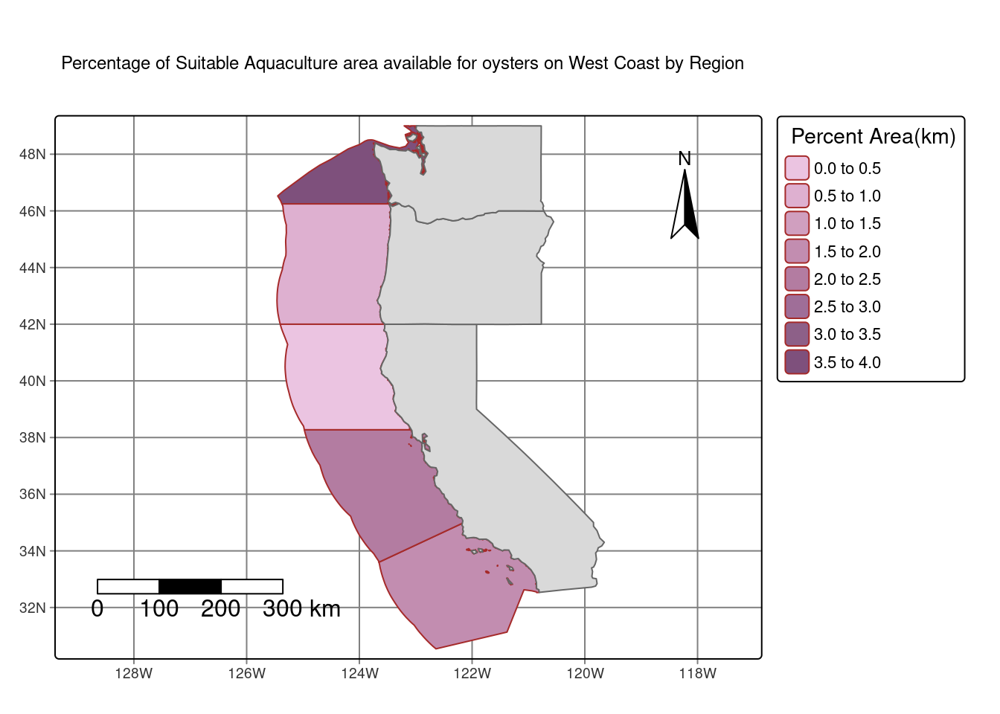

# calculate the mean of all_ssd
all_ssd_mean <- mean(all_ssd)
# convert sst data from Kelvin to Celsius
all_ssd_C <- all_ssd_mean - 273.15
#rename mean to Celsius
names(all_ssd_C) <- c("celsius")
#crop depth raster to all_ssd raster
depth_crop <- crop(depth, all_ssd_C)
#resample depth to match the resolution of depth to all_ssd
depth_crop <- resample(depth_crop, all_ssd, method = "near")
#stack two rasters on top of each other
ssd_depth <- (c(depth_crop,
all_ssd_C))Finding the Optimal Growth for Marine Aquaculture Species
Overview
Marine aquaculture has the potential to play an important role in the global food supply as a more sustainable protein option than land-based meat production.1 Gentry et al. mapped the potential for marine aquaculture globally based on multiple constraints, including ship traffic, dissolved oxygen, bottom depth .2
Based on previous research, we know that oysters needs the following conditions for optimal growth:
- sea surface temperature: 11-30°C
- depth: 0-70 meters below sea level
Data
Sea Surface Temperature
We will use average annual sea surface temperature (SST) from the years 2008 to 2012 to characterize the average sea surface temperature within the region. The data we are working with was originally generated from NOAA’s 5km Daily Global Satellite Sea Surface Temperature Anomaly v3.1.
Bathymetry
To characterize the depth of the ocean we will use the General Bathymetric Chart of the Oceans (GEBCO).3
Exclusive Economic Zones
We will be designating maritime boundaries using Exclusive Economic Zones off of the west coast of US from Marineregions.org.
Prepare data
To start, we need to load all necessary data and make sure it has the coordinate reference system. To do this I’ll:
- read in the shapefile for the West Coast EEZ (
wc_regions_clean.shp) - read in SST rasters
- combine SST rasters into a raster stack
- read in bathymetry raster (
depth.tif)
Process data
Next, we need process the SST and depth data so that they can be combined. In this case the SST and depth data have slightly different resolutions, extents, and positions. We don’t want to change the underlying depth data, so we will need to resample to match the SST data using the nearest neighbor approach. I’ll do the following in order to have datasets that are easy to work with:
- find the mean SST from 2008-2012
- convert SST data from Kelvin to Celsius
- crop depth raster to match the extent of the SST raster
- resample the depth data to match the resolution of the SST data
Find suitable locations
In order to find suitable locations for marine aquaculture, we’ll need to find locations that are suitable in terms of both SST and depth. The best way to do this is to reclassify the data. I’ll reclassify them to the SST and depth data that are suitable for oysters and find locations on the map that fits these conditions.
#reclassify SST and depth to specify what locations are favorable and not favorable for oysters:
#create reclassification matrix for SST
rcl_celsius <- matrix(c(11, 30, 1,
-Inf, 11, NA,
30, Inf, NA),
ncol = 3, byrow = TRUE)
#create reclassification matrix for depth
rcl_depth <- matrix(c(-70, 0, 1,
-Inf, -70, NA,
0, Inf, NA),
ncol = 3, byrow = TRUE)
#reclassify celsius layer
ssd_depth_classify_c <- classify(ssd_depth$celsius, rcl_celsius)
#reclassify depth layer
ssd_depth_classify_depth <- classify(ssd_depth$depth, rcl_depth)
#combine classified layers together to get one raster again
ssd_depth_classify_combine <- c(ssd_depth_classify_c, ssd_depth_classify_depth)
#create function to multiply celcius and depth layers together
ssd_depth_fun <- function(celsius, depth){
(celsius*depth)
}
#overlap the two layers together to get locations that satisfy both SST and Depth conditions for oysters
ssd_depth_classify_overlap <- lapp(ssd_depth_classify_combine[[c('celsius', 'depth')]], fun = ssd_depth_fun)Determine the most suitable EEZ
We want to determine the total suitable area within each EEZ in order to rank zones by priority. To do so, we need to find the total area of suitable locations within each EEZ. I’ll also find the percentage of each zone that is suitable for understanding purposes.
#first rasterize ssd overlap with west coast data
rast_ssd <- rasterize(west_coast_clean, ssd_depth_classify_overlap, field = "rgn")
#then make mask of rasterized with ssd overlap data
mask_ssd <- mask(rast_ssd, ssd_depth_classify_overlap)
#find area of grid cells
pixel_info <- cellSize(mask_ssd, unit = "km")
#area for all everything
zonal_ssd <- zonal(pixel_info, mask_ssd, fun = "sum")
#extract from the mask to find the number of suitable cells
extract_ssd <- terra::extract(mask_ssd, west_coast_clean)
suitable_cells <- extract_ssd %>%
group_by(rgn) %>%
summarize(count = n()) %>%
filter(!is.na(rgn))
#Find suitable area inside EEZ
#merge the two dataframes:
zonal_pixel_joined <- full_join(suitable_cells, zonal_ssd, by = "rgn")
#create new dataframe
masked_area <- zonal_pixel_joined %>%
rename(area_region_km2 = area) %>% #rename column
dplyr::select(rgn, area_region_km2) #select for only region and area column
#join dataframe created above with west coast data by region
masked_area_2 <- full_join(west_coast_clean, masked_area, by = 'rgn')
#find the percentage of suitable location in each zone
masked_area_3 <- masked_area_2 %>%
group_by(rgn) %>% #group by rgn
mutate(percent_per_zone = (area_region_km2 / area_km2)*100) #create a new column for percentagesVisualize results
Now that we have results, we need to present them! I’ll create two maps: one that shows total suitable area by region and one that shows percent suitable area by region.
#create a dataset with the the polygons of necessary states
west_coast_base <- us_states %>%
filter(NAME %in% c('California','Oregon','Washington')) %>%
st_transform(crs = st_crs(masked_area_3))
#total suitable area by region
tm_shape(masked_area_3) + #use suitable location data
tm_graticules() +
tm_polygons('area_region_km2', #plot area in km
palette = 'green',
border.col = "blue",
title = "Area(km)") +
tm_compass(type = "arrow", position = c("right", "top"), size = 3) + # compass in on map at the top right of the map
tm_scalebar(breaks = c(0, 100, 200, 300), position = c("left", "bottom"), text.size = 1, width = 10) + # scale bar is on map at the bottom left of the map
tm_layout(asp = 1.3, #using aspect layout 1.3 for my map
title.size = 1.3) +
tm_title("Total Suitable Aquaculture area available for oysters on West Coast by Region") + #plot title
tm_shape(west_coast_base) + #plot west coast states polygons
tm_polygons()#percent suitable area by region
tm_shape(masked_area_3) + #use suitable location data
tm_graticules() +
tm_polygons('percent_per_zone', #plot percentage data
palette = 'purple',
border.col = "brown",
title = " Percent Area(km)") +
tm_compass(type = "arrow", position = c("right", "top"), size = 3) + # compass in on map at the top right of the map
tm_scalebar(breaks = c(0, 100, 200, 300), position = c("left", "bottom"), text.size = 1, width = 10) + # scale bar is on map at the bottom left of the map
tm_layout(asp = 1.3, #using aspect layout 1.3 for my map
title.size = 1.3) +
tm_title("Percentage of Suitable Aquaculture area available for oysters on West Coast by Region") + #plot title
tm_shape(west_coast_base) +#plot west coast states polygons
tm_polygons()
Broaden your workflow! (40 points)
Because what I have done can be applied to various aquatic species on the west coast, I’m going to go ahead and make a function that allows the users to input the suitable environment for their targeted species and output a map that shows both total suitable area and percent suitable area both by region.
If you wanted to try this function on your own, I urge you to try! You can find information on species depth and temperature requirements on SeaLifeBase. Remember, we are thinking about the potential for marine aquaculture, so these species should have some reasonable potential for commercial consumption.
#example function
species_suitable_conditions <- function(species, temp_min, temp_max, depth_min, depth_max){
rcl_celsius <- matrix(c(temp_min, temp_max, 1,
-Inf, temp_min, NA,
temp_max, Inf, NA),
ncol = 3, byrow = TRUE)
rcl_depth <- matrix(c(depth_max, depth_min, 1,
-Inf, depth_max, NA,
depth_min, Inf, NA),
ncol = 3, byrow = TRUE)
ssd_depth_classify_c <- classify(ssd_depth$celsius, rcl_celsius)
ssd_depth_classify_depth <- classify(ssd_depth$depth, rcl_depth)
ssd_depth_classify_combine <- c(ssd_depth_classify_c, ssd_depth_classify_depth)
ssd_depth_fun <- function(celsius, depth){
(celsius*depth)
}
ssd_depth_classify_overlap <- lapp(ssd_depth_classify_combine[[c('celsius', 'depth')]], fun = ssd_depth_fun)
rast_ssd <- rasterize(west_coast_clean, ssd_depth_classify_overlap, field = "rgn")
mask_ssd <- mask(rast_ssd, ssd_depth_classify_overlap)
pixel_info <- cellSize(mask_ssd, unit = "km")
zonal_ssd <- zonal(pixel_info, mask_ssd, fun = "sum")
test <- terra::extract(mask_ssd, west_coast_clean)
suitable_cells <- test %>%
group_by(rgn) %>%
summarize(count = n()) %>%
filter(!is.na(rgn))
zonal_pixel_joined <- full_join(suitable_cells, zonal_ssd, by = "rgn")
masked_area <- zonal_pixel_joined %>%
mutate(area_region_km2 = area) %>%
dplyr::select(rgn, area_region_km2)
masked_area_2 <- full_join(west_coast_clean, masked_area, by = 'rgn')
masked_area_3 <- masked_area_2 %>%
group_by(rgn) %>%
mutate(percent_per_zone = (area_region_km2 / area_km2)*100)
map_1 <- tm_shape(masked_area_3) +
tm_graticules() +
tm_polygons('area_region_km2',
palette = 'green',
border.col = "blue",
title = "Area(km)") +
tm_compass(type = "arrow", position = c("right", "top"), size = 3) +
tm_scalebar(breaks = c(0, 100, 200, 300), position = c("left", "bottom"), text.size = 1, width = 10) +
tm_layout(asp = 1.3,
title.size = 1.3) +
tm_title(paste0("Total Suitable area available for ", species,"by Region")) +
tm_shape(west_coast_base) +
tm_polygons()
map_2 <- tm_shape(masked_area_3) +
tm_graticules() +
tm_polygons('percent_per_zone',
palette = 'purple',
border.col = "brown",
title = "Percent Area(km)") +
tm_compass(type = "arrow", position = c("right", "top"), size = 3) +
tm_scalebar(breaks = c(0, 100, 200, 300), position = c("left", "bottom"), text.size = 1, width = 10) +
tm_layout(asp = 1.3,
title.size = 1.3) +
tm_title(paste0("Total Suitable Percentage available for ", species,"by Region")) +
tm_shape(west_coast_base) +
tm_polygons()
print(map_1)
print(map_2)
}
species_suitable_conditions(species = 'New Zealand green mussels ', temp_min = 11, temp_max = 30, depth_min = 0, depth_max = -100)Footnotes
Hall, S. J., Delaporte, A., Phillips, M. J., Beveridge, M. & O’Keefe, M. Blue Frontiers: Managing the Environmental Costs of Aquaculture (The WorldFish Center, Penang, Malaysia, 2011).↩︎
Gentry, R. R., Froehlich, H. E., Grimm, D., Kareiva, P., Parke, M., Rust, M., Gaines, S. D., & Halpern, B. S. Mapping the global potential for marine aquaculture. Nature Ecology & Evolution, 1, 1317-1324 (2017).↩︎
GEBCO Compilation Group (2022) GEBCO_2022 Grid (doi:10.5285/e0f0bb80-ab44-2739-e053-6c86abc0289c).↩︎